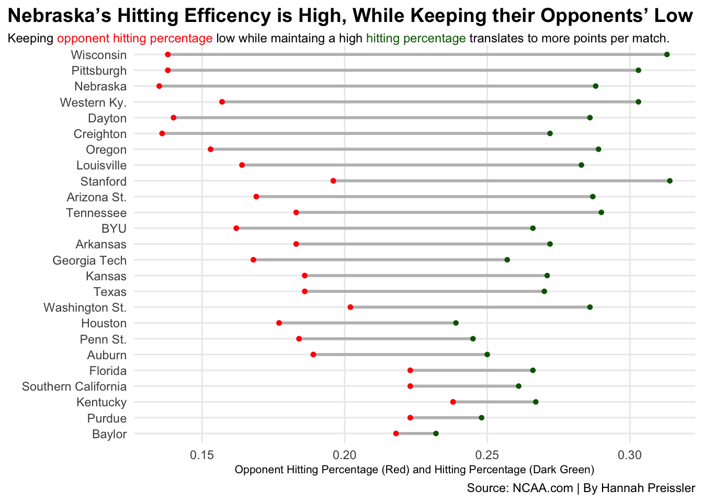

Code
library(tidyverse)
library(ggrepel)
library(ggalt)
library(ggtext)
top25 <- c("Nebraska", "Wisconsin", "Louisville", "Texas", "Stanford", "Pittsburgh", "Oregon", "Arkansas", "Washington St.", "Georgia Tech", "Tennessee", "BYU", "Kentucky", "Kansas", "Arizona St.", "Creighton", "Purdue", "Dayton", "Penn St.", "Baylor", "Florida", "Houston", "Western Ky.", "Auburn", "Southern California")
hittingpct <- read_csv("newhitting.csv") |>
mutate(Team = gsub("(FL)", "FL", Team, fixed=TRUE)) |>
mutate(Team = gsub("(NY)", "NY", Team, fixed=TRUE)) |>
mutate(Team = gsub("(PA)", "PA", Team, fixed=TRUE)) |>
mutate(Team = gsub("(OH)", "OH", Team, fixed=TRUE)) |>
separate(Team, into=c("Team", "Conference"), sep="\\(") |>
mutate(Conference=gsub(")", "", Conference)) |>
mutate(Team = str_trim(Team))
killsperset <- read_csv("newkills.csv") |>
mutate(Team = gsub("(FL)", "FL", Team, fixed=TRUE)) |>
mutate(Team = gsub("(NY)", "NY", Team, fixed=TRUE)) |>
mutate(Team = gsub("(PA)", "PA", Team, fixed=TRUE)) |>
mutate(Team = gsub("(OH)", "OH", Team, fixed=TRUE)) |>
separate(Team, into=c("Team", "Conference"), sep="\\(") |>
mutate(Conference=gsub(")", "", Conference)) |>
mutate(Team = str_trim(Team))
opphitting <- read_csv("opphit.csv") |>
mutate(Team = gsub("(FL)", "FL", Team, fixed=TRUE)) |>
mutate(Team = gsub("(NY)", "NY", Team, fixed=TRUE)) |>
mutate(Team = gsub("(PA)", "PA", Team, fixed=TRUE)) |>
mutate(Team = gsub("(OH)", "OH", Team, fixed=TRUE)) |>
separate(Team, into=c("Team", "Conference"), sep="\\(") |>
mutate(Conference=gsub(")", "", Conference)) |>
mutate(Team = str_trim(Team))
blocks <- read_csv("blocksperset.csv") |>
mutate(Team = gsub("(FL)", "FL", Team, fixed=TRUE)) |>
mutate(Team = gsub("(NY)", "NY", Team, fixed=TRUE)) |>
mutate(Team = gsub("(PA)", "PA", Team, fixed=TRUE)) |>
mutate(Team = gsub("(OH)", "OH", Team, fixed=TRUE)) |>
separate(Team, into=c("Team", "Conference"), sep="\\(") |>
mutate(Conference=gsub(")", "", Conference)) |>
mutate(Team = str_trim(Team))
digs <- read_csv("digs.csv") |>
mutate(Team = gsub("(FL)", "FL", Team, fixed=TRUE)) |>
mutate(Team = gsub("(NY)", "NY", Team, fixed=TRUE)) |>
mutate(Team = gsub("(PA)", "PA", Team, fixed=TRUE)) |>
mutate(Team = gsub("(OH)", "OH", Team, fixed=TRUE)) |>
separate(Team, into=c("Team", "Conference"), sep="\\(") |>
mutate(Conference=gsub(")", "", Conference)) |>
mutate(Team = str_trim(Team))
defense <- blocks |> inner_join(digs, by=c("Team" = "Team", "Conference" = "Conference", "S" = "S"))
dbell <- defense |>
filter(Team %in% top25) |>
select(Team, Conference, `Per Set.x`, `Per Set.y`) |>
rename(BlocksPerSet = 3, DigsPerSet =4) |>
pivot_longer(cols=c(-Team, -Conference), names_to="Type", values_to="PerSet")
offense <- hittingpct |>
inner_join(killsperset, by=c("Team" = "Team", "Conference" = "Conference", "Kills" = "Kills"))
hitting <- hittingpct |>
inner_join(opphitting, by=c("Team" = "Team", "Conference" = "Conference", "S" = "S"))
top15 <- c("Nebraska", "Wisconsin", "Louisville", "Texas", "Stanford","Louisville" , "Pittsburgh", "Oregon", "Arkansas", "Washington St.", "Georgia Tech", "Tennessee", "BYU", "Kentucky", "Kansas", "Arizona St.")
joined_top15 <- offense |>
filter(Team %in% top15)
nu <- offense |> filter(Team == "Nebraska")
hitting25 <- hitting |>
filter(Team %in% top25) |>
mutate(difference = `Pct.` - `Opp Pct`)
ggplot() +
geom_dumbbell(
data=hitting25,
aes(y=reorder (Team, difference), x=Pct., xend= `Opp Pct`),
size = 1,
color = "grey",
colour_x = "darkgreen",
colour_xend = "red") +
labs(title = "Nebraska’s Hitting Efficency is High, While Keeping their Opponents’ Low",
subtitle =" Keeping <span style ='color:red;'>opponent hitting percentage</span> low while maintaing a high <span style = 'color:darkgreen;'>hitting percentage</span> translates to more points per match.",
y="",
x="Opponent Hitting Percentage (Red) and Hitting Percentage (Dark Green)",
caption="Source: NCAA.com | By Hannah Preissler") +
theme_minimal() +
theme(
plot.title = element_text(size = 14, face = "bold"),
axis.title = element_text(size = 8),
plot.subtitle = element_textbox_simple(size=9),
panel.grid.minor = element_blank(),
plot.title.position = "plot"
)